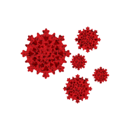

<nav class="navbar navbar-expand-lg navbar-dark bg-dark">
    
    <div class="container-fluid">
        <a class="navbar-brand"  target="blank" href="https://en.wikipedia.org/wiki/Coronavirus_disease_2019" title="pandemic history">Covid 19 Tracker</a>
        <!-- <button class="navbar-toggler" type="button" data-bs-toggle="collapse" data-bs-target="#navbarNav"
            aria-controls="navbarNav" aria-expanded="false" aria-label="Toggle navigation">
            <span class="navbar-toggler-icon"></span>
        </button> -->
        <div class="collapse navbar-collapse" id="navbarNav">
            <ul class="navbar-nav">
                <li class="nav-item">
                    <a class="nav-link active" aria-current="page" routerLink="/">Home</a>
                </li>
                <li class="nav-item">
                    <a class="nav-link" routerLink="countries">Countries</a>
                </li>
            </ul>
        </div>
        <span class="navbar-text right" style="font-family: cursive;">
            Made with <a style="color: red">❤</a> by Alok Jadhav
        </span>
    </div>
</nav>